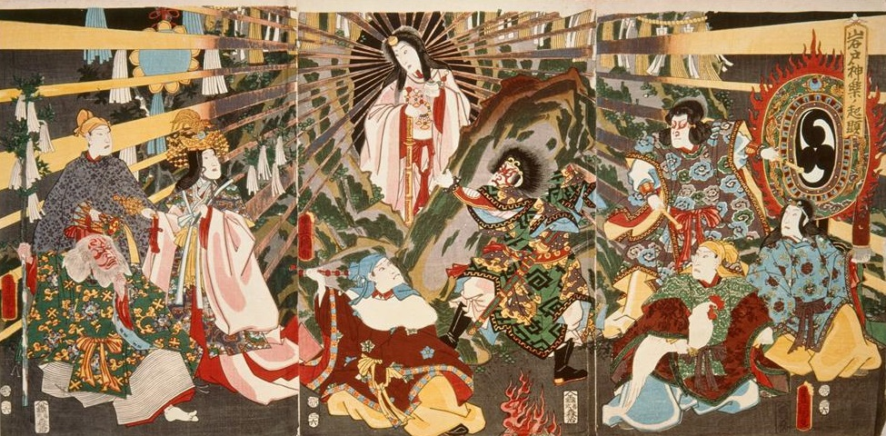
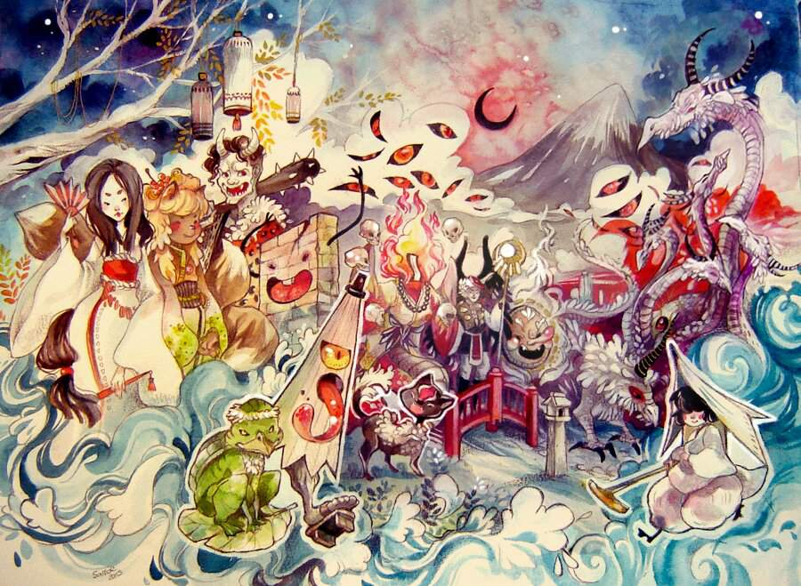
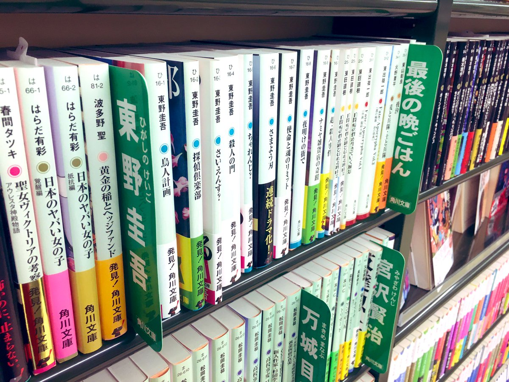
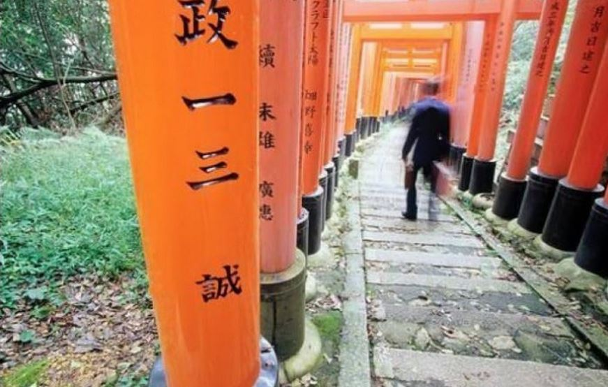

Przydatne linki Spis treści: Panteon japoński Religia w Japonii Lista Yokai Warto przeczytać Legendy japońskie Panteon japoński  Lista najbardziej znanych bogów Religia w Japonii Religia w Japonii, czyli różnica między Shintō a Buddyzmem Lista Yokai  Lista większej części Yokai w mitologii japońskiej 10 popularnych Yokai Warto przeczytać  Lista lektur o Japonii Legendy japońskie  10 najciekawszych legend japońskich